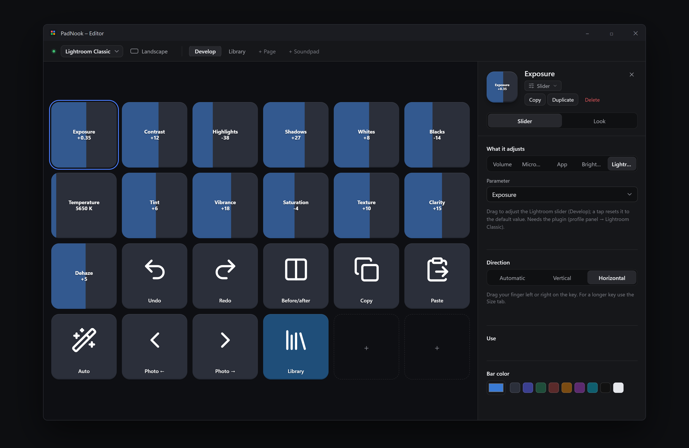

A macro pad on the phone you already own.
PadNook turns your iPhone, iPad or Android into a touch keypad for your Windows PC. Tap a key and the PC runs the action. Keys can also show what's happening, live.
What the PC is doing
Messages on the network
Three pieces, all in your home.
The phone shows the keys
You open the page PadNook shows on the PC and add it to the Home screen. It becomes a full-screen app, with no store and nothing to install on the phone.
Your Wi-Fi carries the taps
Phone and PC talk directly on the local network. Nothing goes through the internet, except the services you choose to connect (weather, Twitch, webhooks…).
The PC runs the action
PadNook.exe lives as an icon next to the clock. It runs shortcuts, programs, audio, OBS, Twitch, Lightroom… and sends live state back to the keys.
Six kinds of key. Try each one.
Every key is a type plus one or more actions. Pick a type and play with the key on the right.
The keys follow the program you're using.
Link a profile to a program. When that program comes to the front, every phone and tablet switches to its keys by themselves. Pick a program on the taskbar, then use the keys on the phone: they really drive the program.
Build the keys on the PC, see them on the phone instantly.
Click the PadNook icon next to the clock. Every change reaches all connected devices right away.

From download to first tap in about two minutes.
Works with the tools you already use.
Plus everything a keyboard can do: shortcuts, programs, text, media, windows, system. Pick one to see what it does.
The phone is a remote, not a key to your PC.
A paired phone can only say "I pressed key X". What that key does is decided by the PC, from its own configuration.
On the phone
- Must be paired with a temporary code
- Can be revoked from the PC at any time
- Shows the keys, can't edit them
- Never receives passwords or tokens
{ "t": "press", "keyId": "k12",
"gesture": "tap" }
All a phone ever sends: which key, and which gesture.
On the PC
- Accepts connections from the local network only
- Keys and actions are edited only here
- Tokens and passwords encrypted with Windows data protection
- OBS, Streamlabs Desktop and Lightroom stay on 127.0.0.1